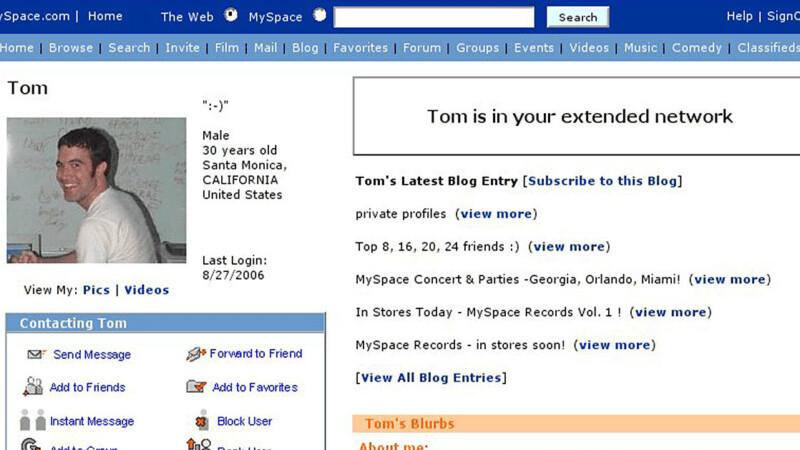
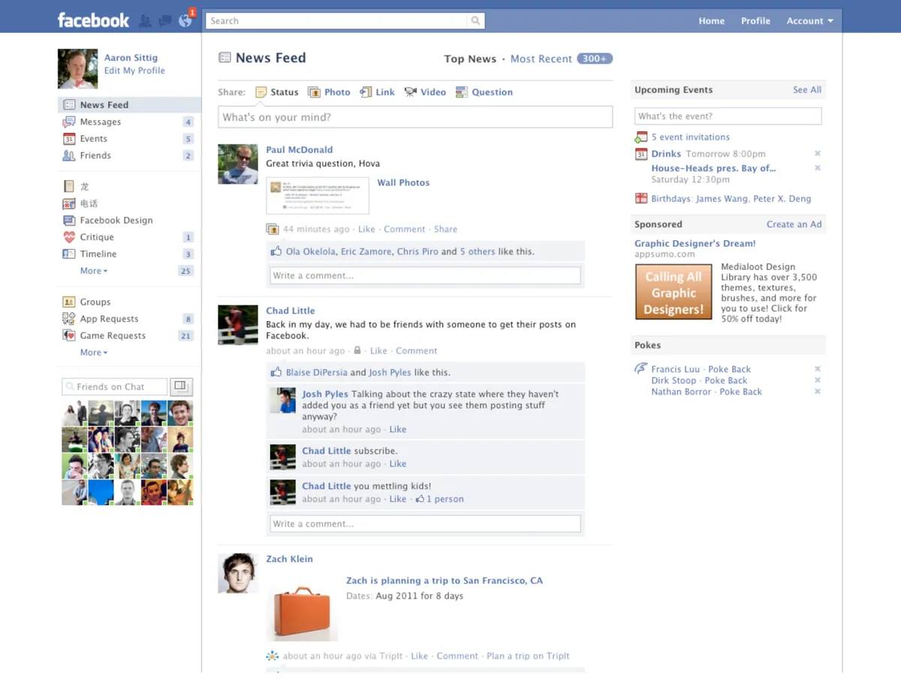
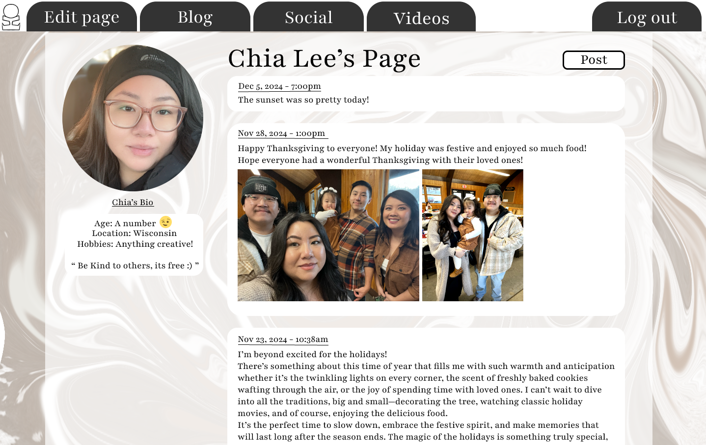
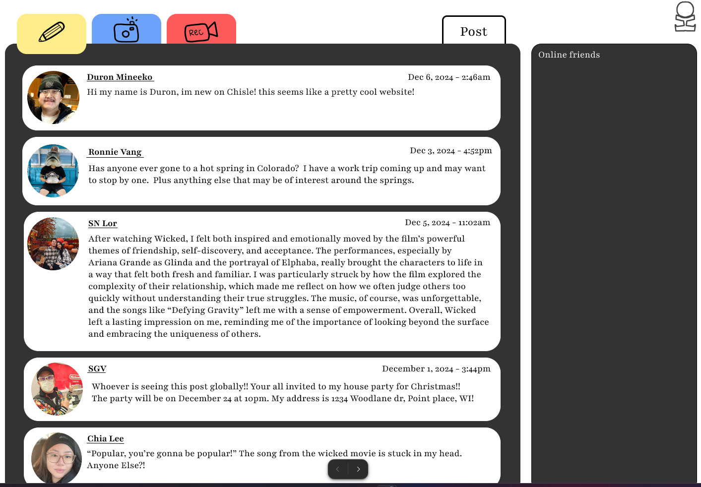
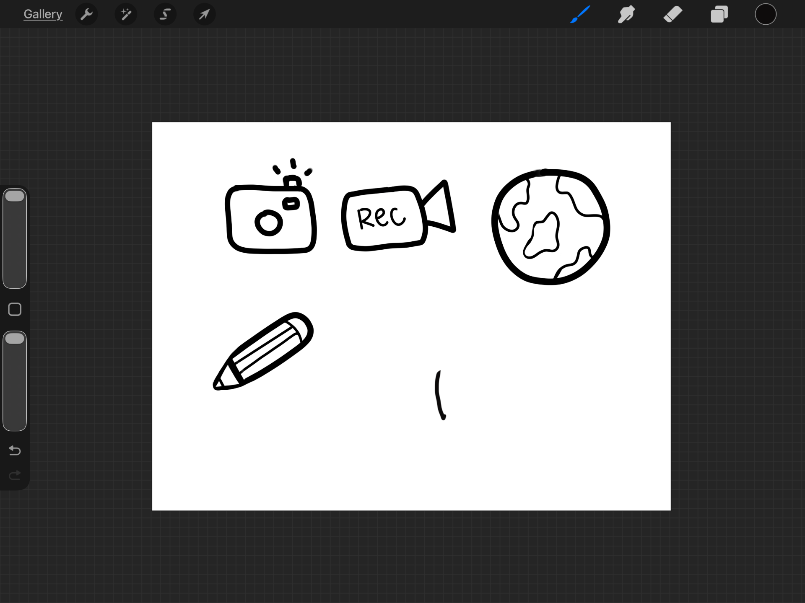
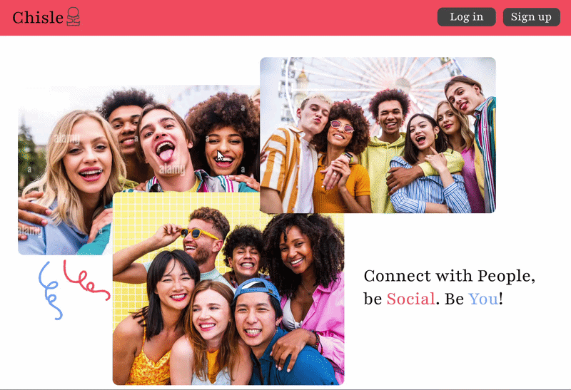
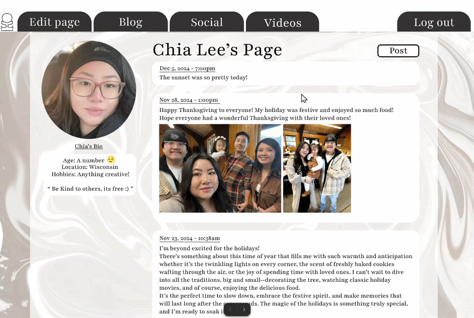

Social Website Redesign
Project Overview
This project involved redesigning outdated social websites to create a more modern, engaging, and enjoyable user experience. The primary goal was to transform interfaces that felt cluttered and confusing into platforms that are visually appealing, intuitive, and fun to navigate. The redesign focused on balancing aesthetics with usability, ensuring that users can easily interact with the platform while enjoying a more playful and modern visual style.
Project Details
Tools: Figma, Adobe Photoshop Duration: 3 weeks Focus: Responsive web design for multiple screen sizes, including desktop and mobile Clear and logical navigation structure for improved usability Incorporation of a more lively and engaging visual language while maintaining organization
Problem Statement
The original websites were visually outdated and presented several usability challenges. Key problems included: Overly cluttered layouts that made it difficult for users to focus on important content Confusing or inconsistent navigation, resulting in frustration and lower engagement A lack of visual hierarchy, making it hard to differentiate between primary and secondary content Minimal use of color and personality, leading to a dull and uninspiring experience These issues motivated the redesign, with the goal of creating a platform that feels modern, approachable, and fun, without sacrificing clarity or usability.
Design Process
Research
Here are some photos and screenshots of old social websites that I analyzed. They helped me see what didn’t work well with navigation, layout, and overall design, and gave me ideas for how to improve the redesign.


To inform the redesign, I conducted a thorough review of the existing websites and similar platforms. I discovered several patterns and pain points: Layouts were very rigid and square, which limited visual interest Color schemes were muted and lacked emphasis on hierarchy Components such as buttons, menus, and interactive elements were inconsistent and difficult to use Content often felt unorganized, with little distinction between sections or priorities Based on this research, I aimed to create a design that embraces a more dynamic layout, playful yet functional components, and a clear visual hierarchy to guide users naturally through the experience.
Visual Design
For the visual design phase, I produced high-fidelity mockups of the main pages, including the newsfeed and user profile. These designs introduced: Rounded and approachable shapes to replace the rigid, square layouts A lively, modern color palette that creates energy without overwhelming users Consistent typography and spacing to maintain readability and organization Custom-designed elements such as buttons, icons, and interactive features to reinforce the playful, engaging style I also included the process for creating my personal logo. The logo is derived from my initials, subtly forming a human figure, reflecting the personal and human-centered approach of the redesign. Hand-drawn button designs were used to maintain a unique, cohesive visual identity across the platform.



Prototype
The final design prototype was used with figma & photoshop. Changes consists of the button design, cutomizeable profile to capture the users personaility, such as seting an image as your backgrounf on your profile. Buttons on the profile looks like tabs at the top like files. For my Newsfeed buttons are more rectangled with round edges. Buttons are images I drew insted of text to give it a more creative look. each post having its own bubble.


Key Takeaways
Old social websites often suffered from cluttered layouts, unclear navigation, and a lack of visual hierarchy. Redesigning them with a clear structure, engaging visuals, and consistent interactive elements greatly improves usability and makes the experience more enjoyable for users.